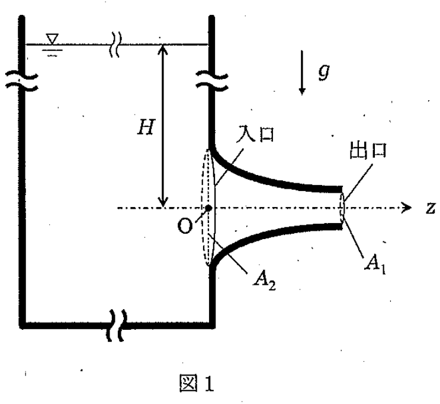

問題概要
2022年度の流体力学入試では、大問【1】でベルヌーイの定理と流量保存則と運動量保存則を用いた水槽からの流出問題、大問【2】で平行平板間の粘性流れ（ナビエ・ストークス方程式）と，ポアズイユ流れに関する問題が出題されました。流体力学の基礎から応用まで、幅広い知識が問われる内容でした。
問題PDFをダウンロード (2022年度)大問【1】
図1に示された、大きな水槽の側面に取り付けられたノズルから液体が流出する状況に関する問題を解きます。圧力はゲージ圧、流体は密度 \(\rho\) の完全流体として扱います。

図1: 水槽とノズル
考え方のヒント
この問題は、ベルヌーイの定理、連続の式（質量保存則）、そして運動量保存則を組み合わせて解く典型的な流体力学の問題です。各点の圧力、流速、高さを正確に設定し、適切な法則を適用しましょう。
途中式と解答
(1) ノズル出口でのz軸方向の流速を求めよ
水槽の液面（点Aとする）とノズル出口（点1とする）の間でベルヌーイの定理を適用します。液面の高さは \(H\)、出口の高さは 0 です。
答え: ノズル出口での流速は \(\sqrt{2gH}\) です。
- 点A: 圧力 \(P_A = 0\)（大気圧、ゲージ圧0）、流速 \(v_A \approx 0\)（大きな水槽のため）、高さ \(z_A = H\)
- 点1: 圧力 \(P_1 = 0\)（大気へ放出、ゲージ圧0）、流速 \(v_1\)、高さ \(z_1 = 0\)
(2) ノズル入口でのz軸方向の流速を求めよ
ノズル入口（断面積 \(A_2\)）と出口（断面積 \(A_1\)）の間で、連続の式を適用します。
$$A_1 v_1 = A_2 v_2$$
ここから、ノズル入口での流速 \(v_2\) を求めます。
$$v_2 = \frac{A_1}{A_2} v_1 = \frac{A_1}{A_2} \sqrt{2gH}$$
答え: ノズル入口での流速は \(\frac{A_1}{A_2} \sqrt{2gH}\) です。
(3) ノズル入口での圧力を求めよ
水槽の液面（点A）とノズル入口（点2）の間でベルヌーイの定理を適用します。
答え: ノズル入口での圧力は \(\rho gH \left( 1 - \left( \frac{A_1}{A_2} \right)^2 \right)\) です。
- 点A: \(P_A = 0\), \(v_A \approx 0\), \(z_A = H\)
- 点2: 圧力 \(P_2\), 流速 \(v_2\), 高さ \(z_2 = 0\)
(4) ノズル全体にかかるz軸方向の力を求めよ
ノズル内の流体を検査体積とし、z軸方向の運動量の法則を適用します。ノズルが流体に及ぼす力を \(F_{wall}\) とすると、z軸方向の力のつり合いは以下のようになります。
$$P_2 A_2 - P_1 A_1 + F_{wall} = \dot{m}(v_1 - v_2)$$
ここで、$P_1=0$（ゲージ圧）、質量流量 \(\dot{m} = \rho A_1 v_1 = \rho A_2 v_2\) です。
$$P_2 A_2 + F_{wall} = (\rho A_1 v_1)v_1 - (\rho A_2 v_2)v_2 = \rho (A_1 v_1^2 - A_2 v_2^2)$$
ノズルが流体から受ける力（求めたい力 \(F\)）は、$F_{wall}$ の反作用なので \(F = -F_{wall}\) です。
$$F = P_2 A_2 - \rho(A_1 v_1^2 - A_2 v_2^2) = P_2 A_2 - \rho A_1 v_1^2 + \rho A_2 v_2^2$$
ここに(1), (2), (3)の結果を代入します。
$$F = \rho gH \left( 1 - \left(\frac{A_1}{A_2}\right)^2 \right) A_2 - \rho A_1 (2gH) + \rho A_2 \left(\frac{A_1}{A_2}\right)^2 (2gH)$$
$$F = \rho gH \left( A_2 - \frac{A_1^2}{A_2} \right) - 2\rho gH A_1 + 2\rho gH \frac{A_1^2}{A_2}$$
$$F = \rho gH \left( A_2 - \frac{A_1^2}{A_2} - 2A_1 + 2\frac{A_1^2}{A_2} \right)$$
$$F = \rho gH \left( A_2 - 2A_1 + \frac{A_1^2}{A_2} \right) = \rho gH \frac{A_2^2 - 2A_1 A_2 + A_1^2}{A_2}$$
$$F = \frac{\rho gH (A_2 - A_1)^2}{A_2}$$
この力は正の値なので、z軸の正の向きに働きます。
答え: ノズル全体にかかる力は、z軸正の向きに \(\frac{\rho gH (A_2 - A_1)^2}{A_2}\) です。
まとめ
この問題は、ベルヌーイの定理と連続の式、そして運動量保存則を段階的に適用することで解くことができます。特に、ノズルにかかる力を求める際には、検査体積の考え方と運動量保存則を正しく適用することが重要です。
全体のポイント
- ベルヌーイの定理の適用条件を理解する。
- 連続の式（質量保存則）を正しく用いる。
- 運動量保存則を検査体積に適用する。
- ゲージ圧と絶対圧の区別に注意する。
受験流体力学のチップス
- 液面や大気開放点での圧力・流速の仮定を明確にする。
- 運動量保存則の適用時には、力の向きと運動量変化の向きに注意する。
- 計算過程を丁寧に記述し、ミスを防ぐ。